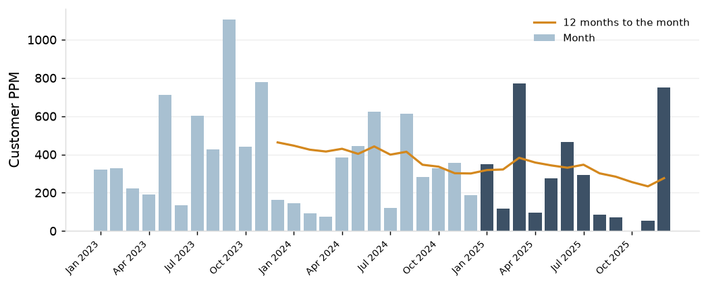
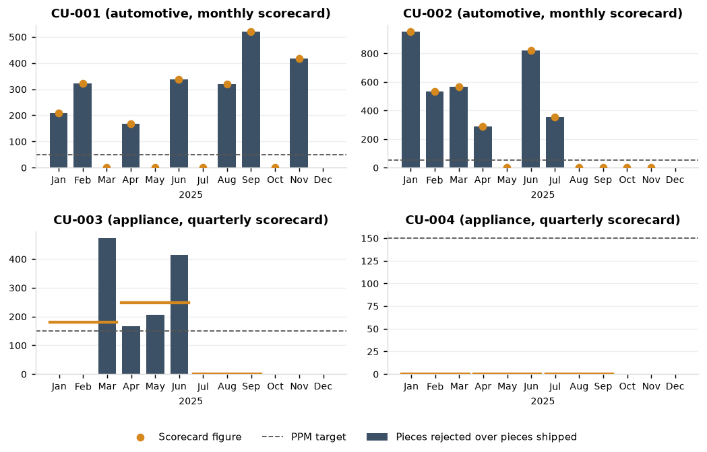
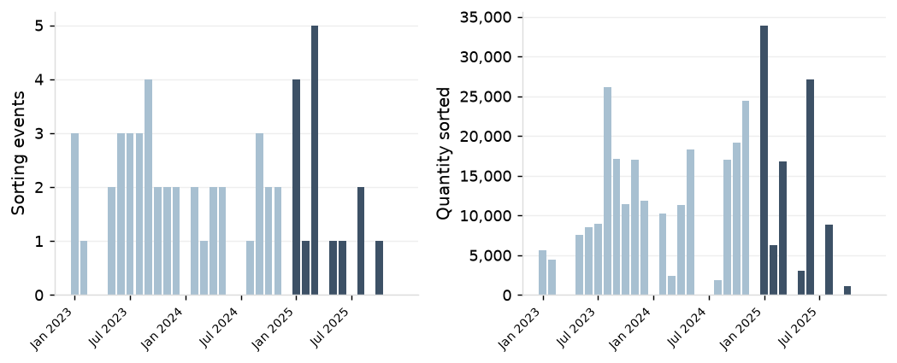
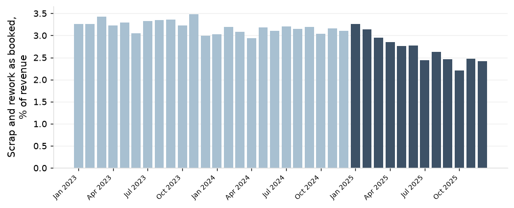
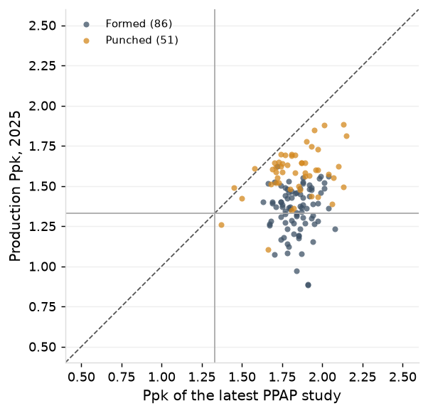
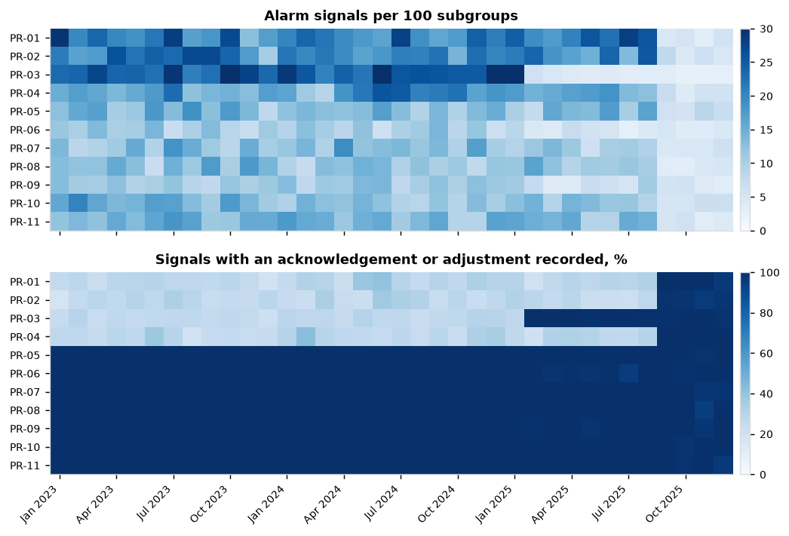
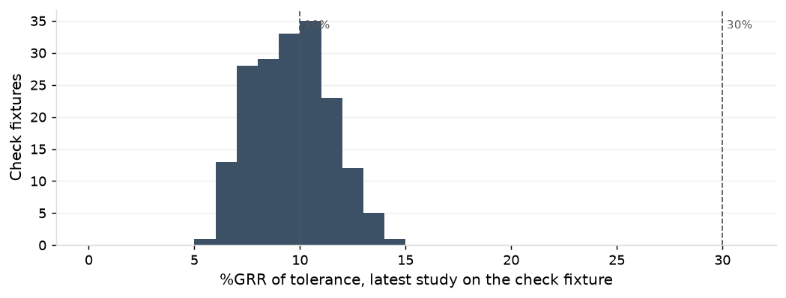
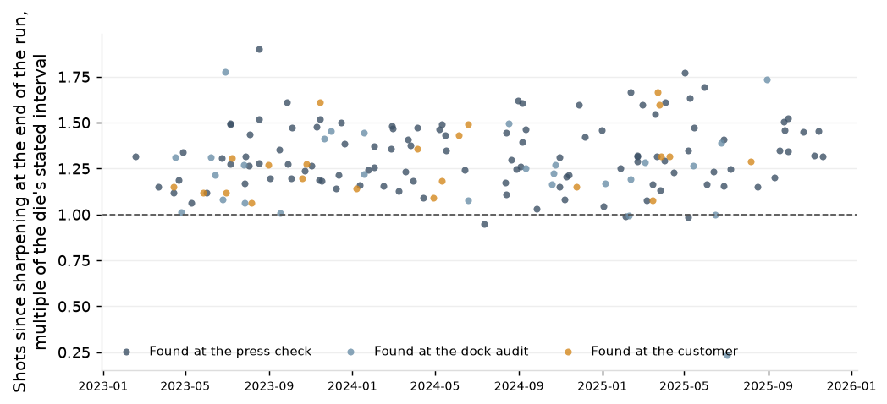

| Customer | Program | Complaints, 12 months to Dec 2025 | Pieces rejected | Pieces shipped | PPM | Scorecard PPM, mean of the periods | PPM target |
|---|---|---|---|---|---|---|---|
| CU-002 | automotive | 13 | 6,954 | 26,412,448 | 263 | 319 | 50 |
| CU-003 | appliance | 7 | 2,946 | 23,657,803 | 125 | 143 | 150 |
| CU-001 | automotive | 10 | 4,446 | 23,652,661 | 188 | 208 | 50 |
| CU-027 | consumer | 1 | 3,115 | 5,139,395 | 606 | ||
| CU-024 | electrical | 1 | 1,845 | 4,998,112 | 369 | ||
| CU-016 | industrial | 3 | 7,455 | 3,862,424 | 1,930 | ||
| CU-004 | appliance | 0 | 0 | 2,614,017 | 0 | 0 | 150 |
| CU-009 | industrial | 1 | 3,102 | 2,273,385 | 1,364 | ||
| CU-029 | consumer | 1 | 3,192 | 2,243,702 | 1,423 | ||
| CU-013 | industrial | 1 | 3,352 | 1,660,012 | 2,019 | ||
| CU-018 | electrical | 1 | 1,850 | 1,556,382 | 1,189 |

| Press | Jan 2025 | Feb 2025 | Mar 2025 | Apr 2025 | May 2025 | Jun 2025 | Jul 2025 | Aug 2025 | Sep 2025 | Oct 2025 | Nov 2025 | Dec 2025 | 12 months | Quantity sorted |
|---|---|---|---|---|---|---|---|---|---|---|---|---|---|---|
| PR-01 | 0 | 0 | 0 | 0 | 0 | 1 | 0 | 2 | 0 | 0 | 0 | 0 | 3 | 35,959 |
| PR-02 | 0 | 0 | 0 | 0 | 0 | 0 | 0 | 0 | 0 | 0 | 0 | 0 | 0 | 0 |
| PR-03 | 1 | 0 | 4 | 0 | 0 | 0 | 0 | 0 | 0 | 0 | 0 | 0 | 5 | 16,584 |
| PR-04 | 2 | 0 | 1 | 0 | 1 | 0 | 0 | 0 | 0 | 0 | 0 | 0 | 4 | 30,050 |
| PR-05 | 0 | 0 | 0 | 0 | 0 | 0 | 0 | 0 | 0 | 0 | 0 | 0 | 0 | 0 |
| PR-06 | 0 | 0 | 0 | 0 | 0 | 0 | 0 | 0 | 0 | 1 | 0 | 0 | 1 | 1,084 |
| PR-07 | 0 | 1 | 0 | 0 | 0 | 0 | 0 | 0 | 0 | 0 | 0 | 0 | 1 | 6,301 |
| PR-08 | 0 | 0 | 0 | 0 | 0 | 0 | 0 | 0 | 0 | 0 | 0 | 0 | 0 | 0 |
| PR-09 | 0 | 0 | 0 | 0 | 0 | 0 | 0 | 0 | 0 | 0 | 0 | 0 | 0 | 0 |
| PR-10 | 0 | 0 | 0 | 0 | 0 | 0 | 0 | 0 | 0 | 0 | 0 | 0 | 0 | 0 |
| PR-11 | 1 | 0 | 0 | 0 | 0 | 0 | 0 | 0 | 0 | 0 | 0 | 0 | 1 | 7,082 |


| Presses | Class | Critical characteristics | With a PPAP study in the record | Ppk of the latest PPAP study, median | Production Ppk, 2025, median | Production Cpk, median | Production Ppk under 1.33 |
|---|---|---|---|---|---|---|---|
| the other eight presses | formed | 6 | 3 | 1.91 | 1.16 | 1.76 | 5 |
| the other eight presses | punched | 15 | 6 | 1.83 | 1.60 | 1.84 | 2 |
| PR-03, PR-06 and PR-09 | formed | 83 | 83 | 1.84 | 1.37 | 1.72 | 31 |
| PR-03, PR-06 and PR-09 | punched | 45 | 45 | 1.83 | 1.60 | 1.74 | 1 |

| Press | Subgroups, Dec 2025 | Alarm signals | Per 100 subgroups | With an action recorded |
|---|---|---|---|---|
| PR-01 | 836 | 47 | 5.6 | 96% |
| PR-02 | 834 | 38 | 4.6 | 97% |
| PR-03 | 2,612 | 69 | 2.6 | 99% |
| PR-04 | 747 | 43 | 5.8 | 100% |
| PR-05 | 960 | 67 | 7.0 | 100% |
| PR-06 | 1,980 | 85 | 4.3 | 100% |
| PR-07 | 882 | 54 | 6.1 | 98% |
| PR-08 | 843 | 41 | 4.9 | 100% |
| PR-09 | 1,945 | 67 | 3.4 | 100% |
| PR-10 | 972 | 63 | 6.5 | 100% |
| PR-11 | 634 | 26 | 4.1 | 96% |

| %GRR of tolerance, latest study | Check fixtures | Studies dated |
|---|---|---|
| under 10% | 104 | 2025-01-10 to 2025-08-28 |
| 10% to 30% | 76 | 2025-01-10 to 2025-08-28 |

| Year | Burr nonconformances with shots known | On runs ended past the stated interval | Dies | Position, median |
|---|---|---|---|---|
| 2023 | 54 | 54 | 29 | 1.27 |
| 2024 | 55 | 54 | 26 | 1.26 |
| 2025 | 53 | 49 | 33 | 1.32 |
PPM is pieces rejected on complaints received in the period over pieces shipped in the period; a complaint entered a second time for the same customer, part, run, quantity and defect code is left out. Scrap and rework are the accounting lines as booked. Capability is within-subgroup sigma pooled across subgroups for Cpk and the standard deviation of all readings for Ppk, with readings that cannot be a measurement of the part set aside. An alarm signal is an alarm the SPC software raised or a point circled on a paper chart; an action is an acknowledgement or an adjustment recorded against it.